Stamped! — A City Passport
A SwiftUI app that turns the world's great buildings into a passport to fill: more than 1,800 architectural landmarks across 140 cities and 101 university campuses. Fly through photoreal 3D cities, plan a whole trip day by day, walk the streets in Look Around, and earn a stamp for every place you visit.
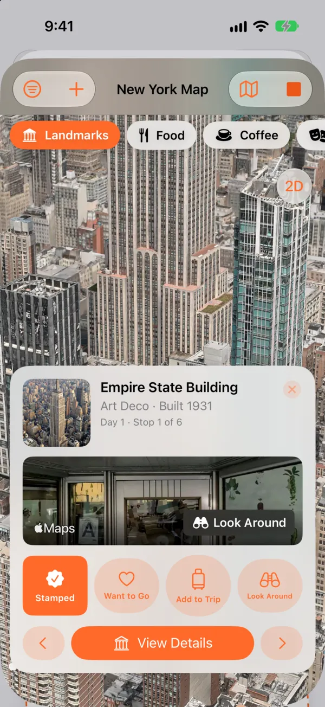
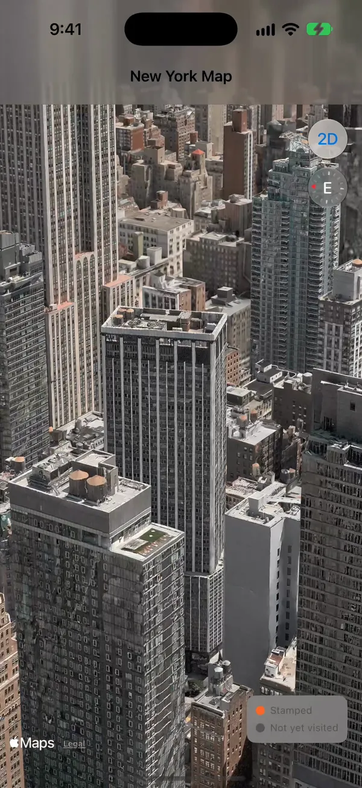
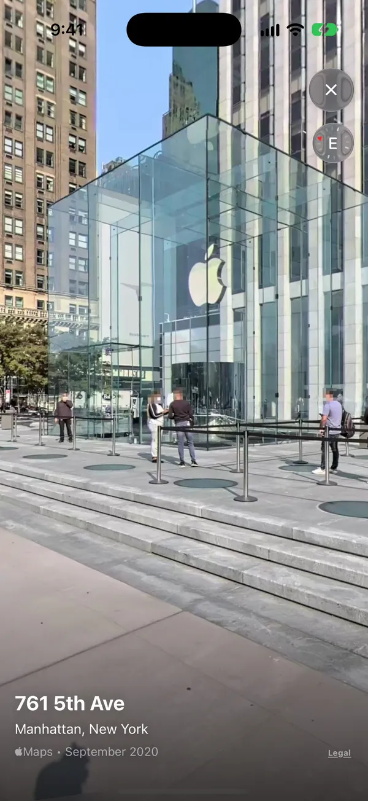
Version 2.4: the map card, the photoreal 3D map, and street-level Look Around
The Problem
Architecture apps are either too passive (a static list of landmarks) or too heavy (full trip planners with accounts and subscriptions). I wanted something in between: tell me what to see, help me get there, and give me a reason to come back. Stamped! turns sightseeing into a collection game: visit every landmark in a city and you earn its stamp.
See It Work
Recorded on iPhone in New York: tap a pin to fly to it in 3D, then drop to street level in Look Around.
Design: A Passport, Not a Database
Under the hood it's a list of 1,800+ buildings. The design job was making it feel like something you collect, not something you scroll. I wrote a style guide for the app (editorial, travel-inspired, reward-driven) and hold every screen to it.
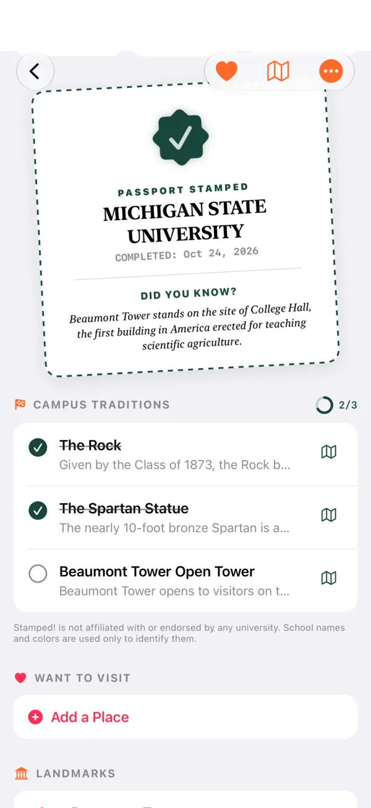
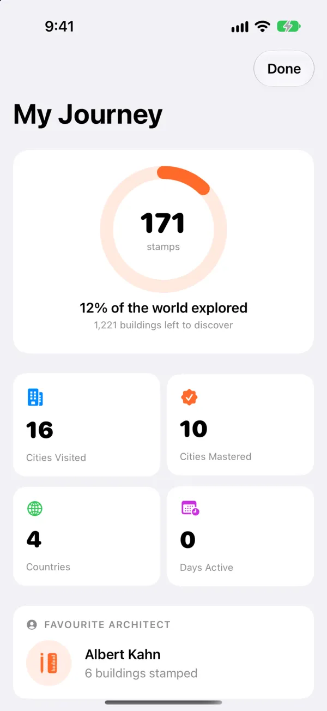
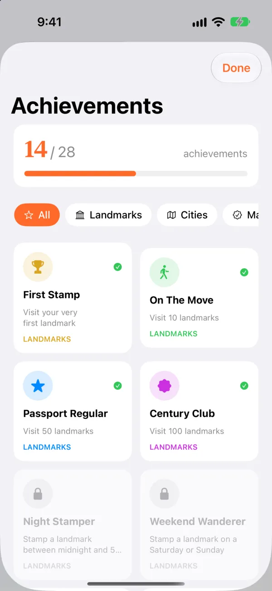
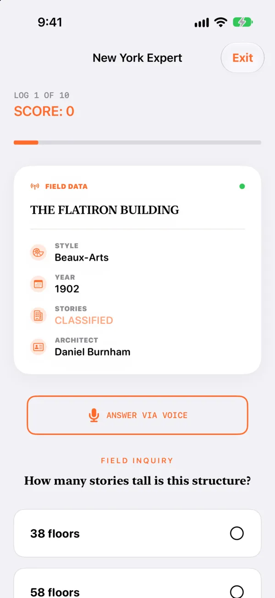
One accent, three voices of type
- Every screen serves the loop: browse → visit → stamp. Weather, events, and dining stayed because they answer "what now that I'm here?"
- Rewards feel ceremonial: a dashed border, a slight tilt, a typewriter date, a fact, and a haptic.
- The map is the app. Stamp, Want to Go, Add to Trip, and Look Around all live on the map card.
- Accessibility changes the skin, not the structure. High contrast swaps color for borders; Reduce Motion stills the stamp and pins.
2.4: Plan a Trip on a 3D Map
2.3 made the photoreal 3D map the center of the app; 2.4 built a trip planner on top of it, and 2.5 added college road trips.
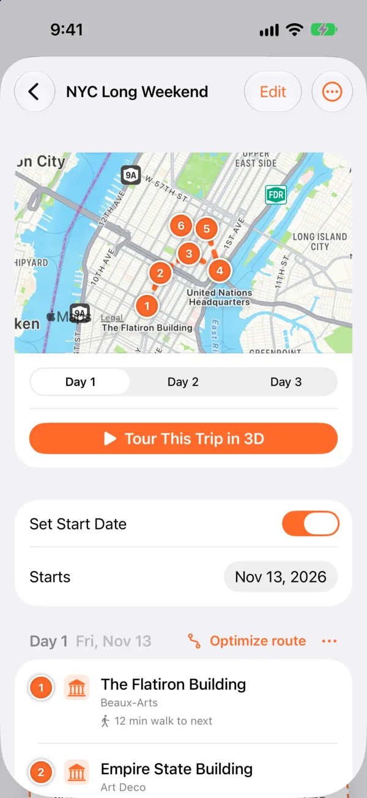
Campus Architecture
101 university campuses, every Big Ten, SEC, ACC and Big 12 school, with their own achievements.
Want to Visit
Heart any landmark or save any Apple Maps place, synced through iCloud.
App Store Screenshots
The 2.3 product page.
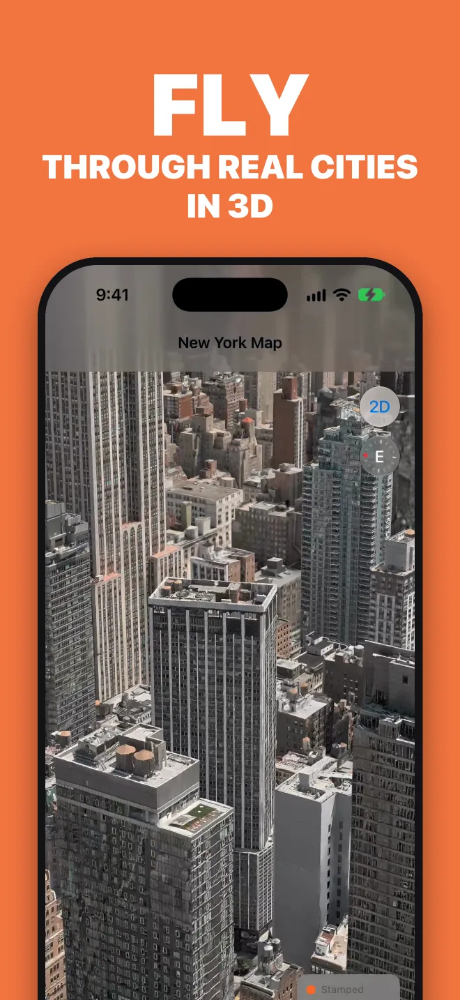
Photoreal 3D map
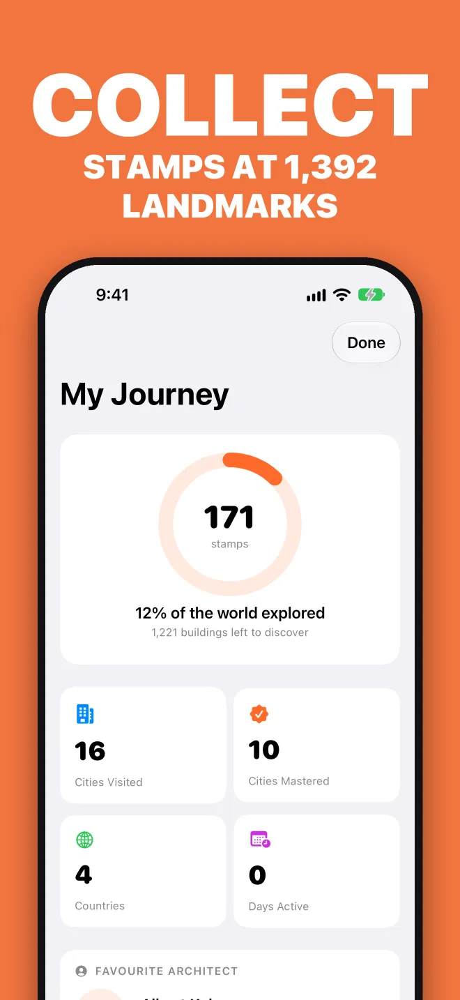
Your journey so far
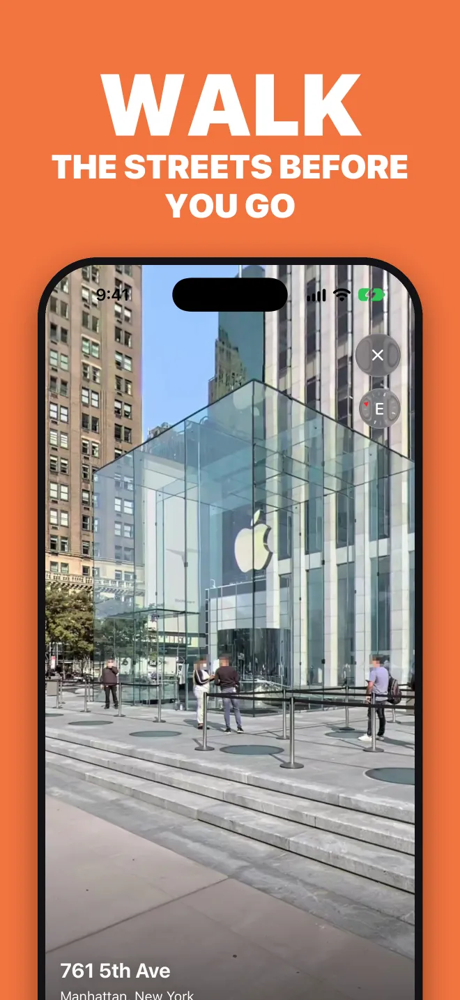
Look Around street view
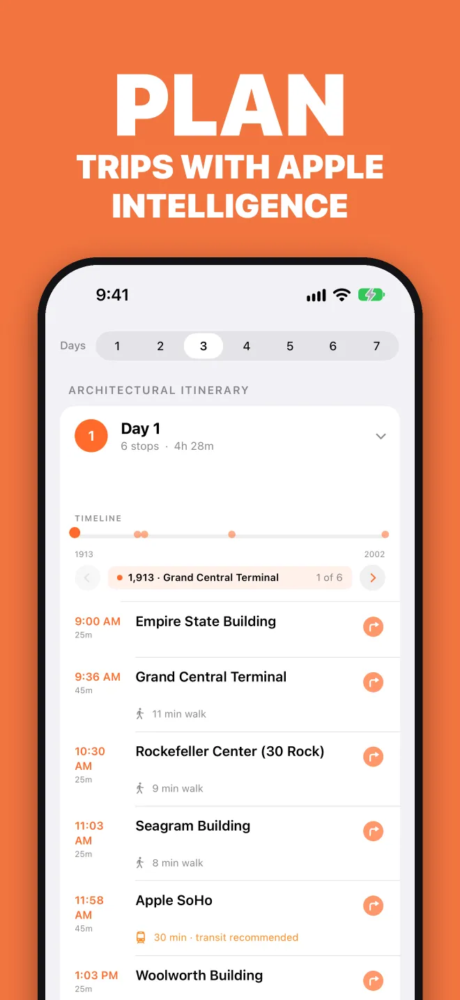
Apple Intelligence itinerary
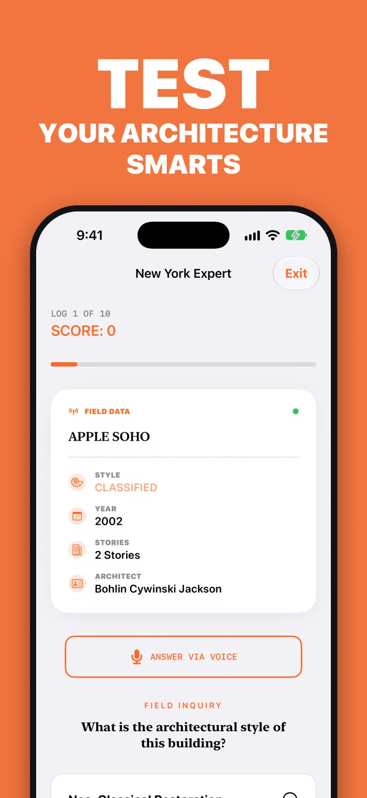
Architecture quiz
More Screens
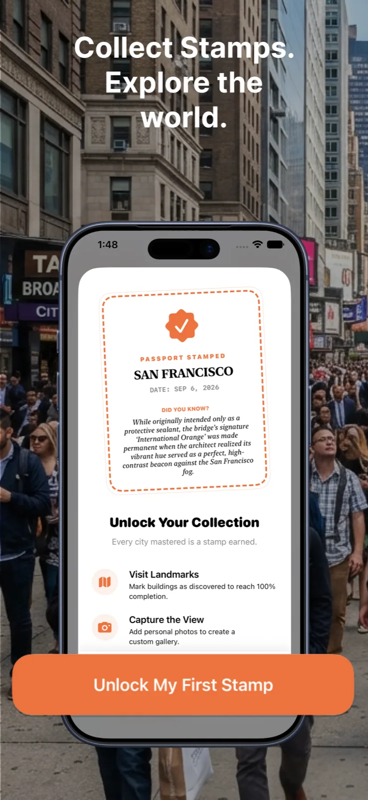
Onboarding
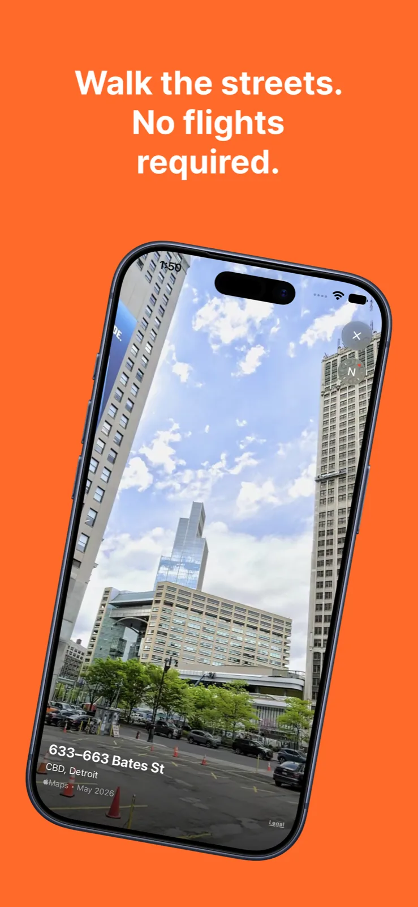
Look Around in Detroit
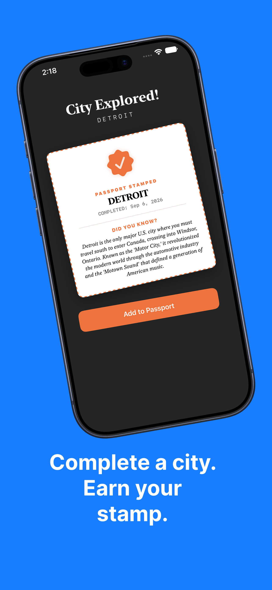
City stamp earned
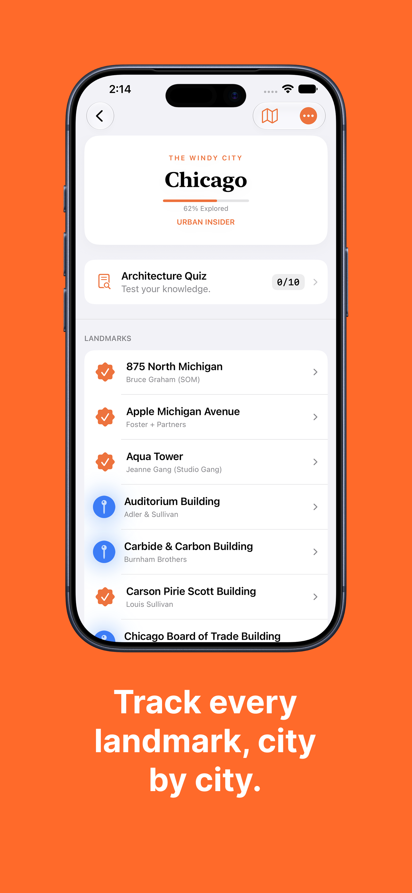
City detail + quiz
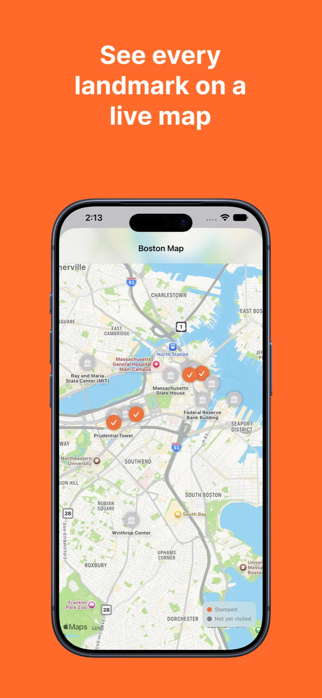
Live landmark map
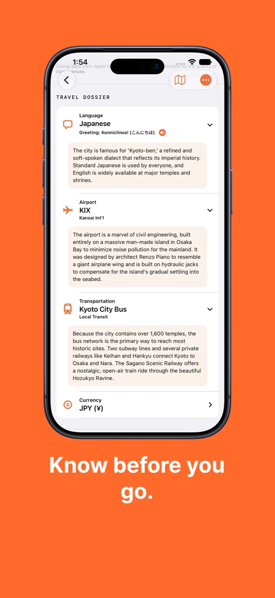
Travel dossier
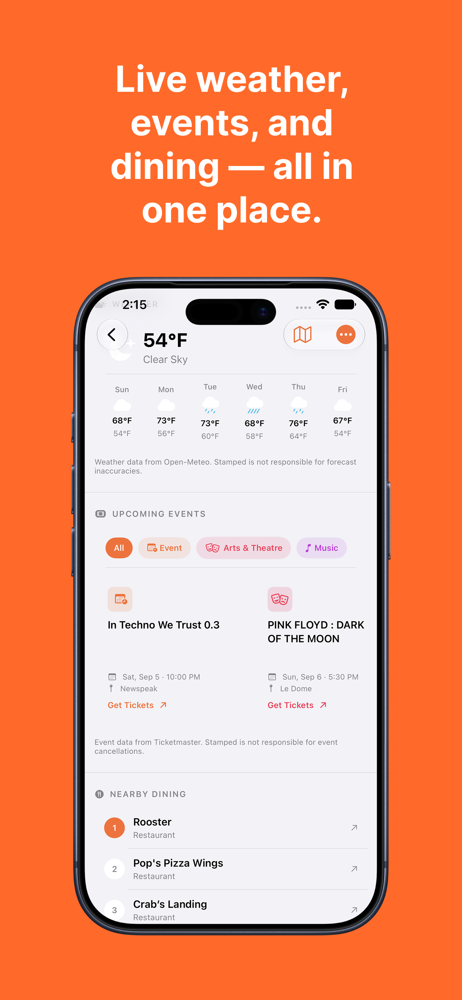
Weather, events & dining
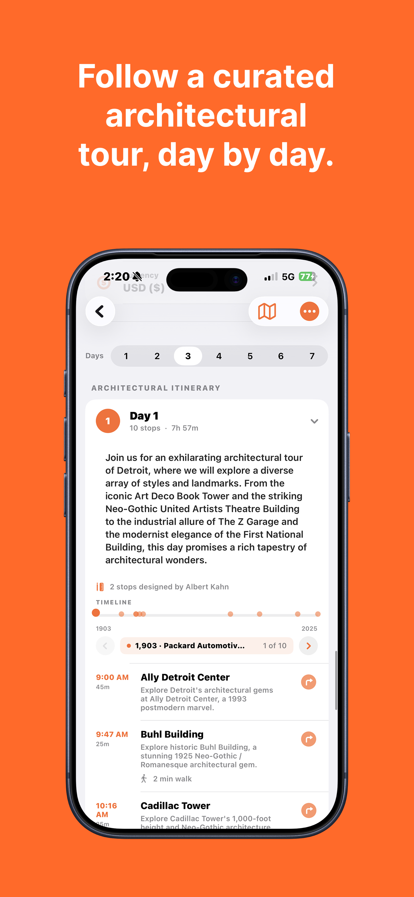
Curated daily itinerary
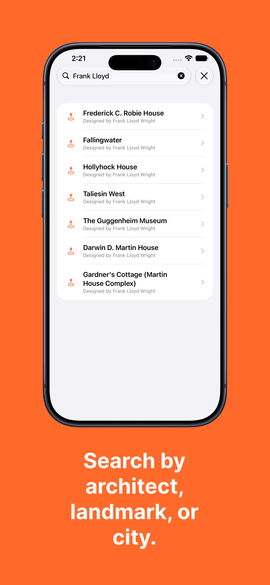
Search by architect
Also in the App
Language, airport, transit, currency, live weather, Ticketmaster events, and nearby dining for every city.
A 10-question architecture quiz per city, plus achievements and a shareable passport.
Find any city, landmark, or architect across all 140 cities.
Stamps, notes, trips, and saved places follow you across devices. No account.
The app and its App Store page, including Japanese, Korean, and Chinese.
Passport progress on your Home Screen.
Architecture
Stamped! is pure SwiftUI with no backend. Landmark and city content is embedded in code (BuildingRegistry, CityData), so browsing and tracking work offline; weather, events, and dining layer on top when there's a connection.
One ObservableObject, GlobalProgressManager, owns visited IDs and photos. It writes to UserDefaults and NSUbiquitousKeyValueStore, so progress syncs through iCloud with no account. Rank and completion are computed from the visited set, so they can never drift out of sync.
The 3D map is SwiftUI's Map with realistic elevation and a MapCamera pitched 60–65°. Guided and trip tours are one cancellable Task that flies stop to stop; any tap cancels it, so the tour never fights you for the camera.
What Was Hard
Scope. A travel app can grow forever. The rule: every feature answers "what do I see?", "how do I get there?", or "what now that I'm here?" Anything else got cut.
Camera framing. Centering on a landmark hid it under the card, so the camera aims slightly south. One far-off pin (JFK in New York) zoomed whole cities out, so city framing now uses the closest 80% of landmarks.
Bad data. Flying to a pin in 3D makes a wrong pin obvious. For 2.4 I audited every landmark: 181 pins moved to their real locations, 200+ photos fixed.
App Review. Apple pushed back on the camera usage string, Ticketmaster links, and the location flow. Getting all three right was the last hurdle to launch.
Where the Idea Could Go
When MSU students visited the Apple Developer Academy, one of them said Stamped! would be perfect for learning your way around campus as a freshman, with dining halls as landmarks and orientation as stamps. I wrote it up as a pitch doc and deck. The first piece is now real: 2.4 added a Campus Architecture collection, and 2.5 grows it to 101 campuses, every Big Ten, SEC, ACC and Big 12 school, Michigan State included, grouped by conference.
Stamped! for Apple Vision Pro
Built and in testing: all 140 cities on the 3D map, a spinning globe of your stamped cities, the quiz, and stamps synced from iPhone. 9 languages, a 24 MB download. Part of my work at the Apple Developer Academy.

The Outcome
Stamped! started in February 2026 as my Swift Student Challenge entry and became the first app I took from zero to the App Store on my own. In eight months it went from 1.0 to 2.5, with a Vision Pro version built and in testing. The patterns I worked out here (one observable store, computed state instead of duplicates, a clean split between content, state, and UI) are the ones I've used in every app since, including Tally. See the app itself on the Stamped! website.